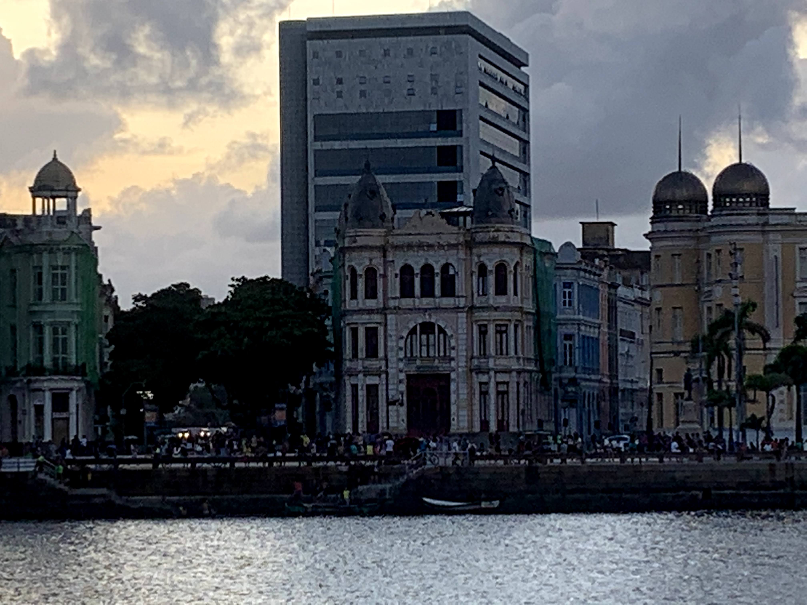
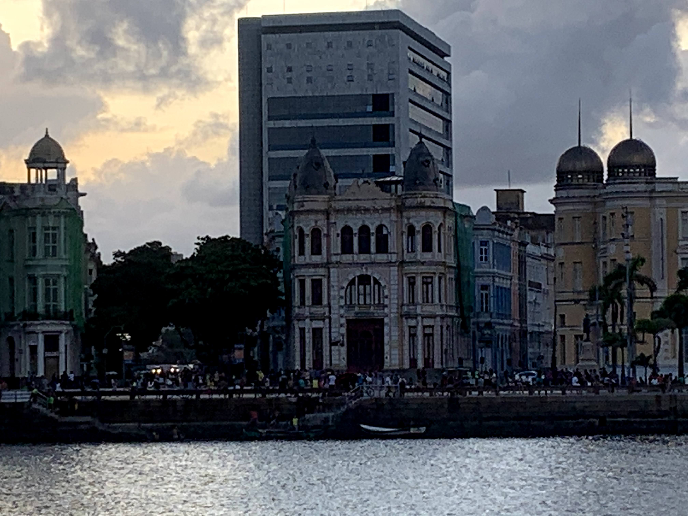

Descubra a Rua do Bom Jesus
A Rua do Bom Jesus eleita uma das ruas mais bonitas do mundo, é conhecida de todos os recifenses, sua história e arquitetura encantadora deixam todos apaixonados.
A Rua do Bom Jesus eleita uma das ruas mais bonitas do mundo, é conhecida de todos os recifenses, sua história e arquitetura encantadora deixam todos apaixonados.
